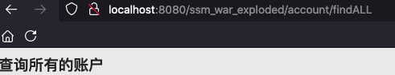
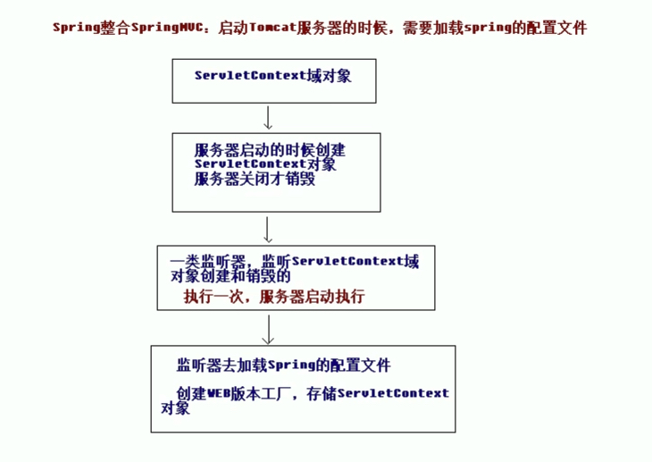
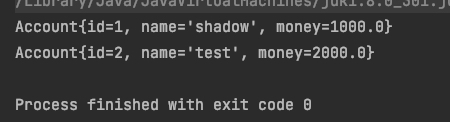
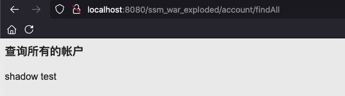

使用Spring来整合SpringMVC和MyBatis，测试项目已传到github
1. 介绍 使用Spring来整合SpringMVC和MyBatis
我们使用配置文件+注解的方式
2. 开发环境 2.1 数据库 在远程linux机器上创建mysql的docker环境
1 2 3 4 5 6 7 8 9 10 docker run -itd --name my-mysql -p 3306 :3306 -e MYSQL_ROOT_PASSWORD=123456 mysql:8 .0 .15 docker exec -it my-mysql bashmysql -uroot -p123456 use mysql;ALTER USER 'root'@'%' IDENTIFIED WITH mysql_native_password BY '123456 ';flush privileges;
创建数据库
1 2 3 4 5 6 7 create database ssm;use ssm; create table account( id int primary key auto_increment, name varchar (20 ), money double );
连接数据库，在account表中加入几条数据
2.2 依赖 版本锁定
1 2 3 4 5 <spring.version > 5.0.2.RELEASE</spring.version > <slf4j.version > 1.6.6</slf4j.version > <log4j.version > 1.2.12</log4j.version > <mysql.version > 8.0.15</mysql.version > <mybatis.version > 3.4.5</mybatis.version >
依赖
1 2 3 4 5 6 7 8 9 10 11 12 13 14 15 16 17 18 19 20 21 22 23 24 25 26 27 28 29 30 31 32 33 34 35 36 37 38 39 40 41 42 43 44 45 46 47 48 49 50 51 52 53 54 55 56 57 58 59 60 61 62 63 64 65 66 67 68 69 70 71 72 73 74 75 76 77 78 79 80 81 82 83 84 85 86 87 88 89 90 91 92 93 94 95 96 97 98 99 100 101 102 <dependency > <groupId > junit</groupId > <artifactId > junit</artifactId > <version > 4.11</version > <scope > test</scope > </dependency > <dependency > <groupId > org.aspectj</groupId > <artifactId > aspectjweaver</artifactId > <version > 1.6.8</version > </dependency > <dependency > <groupId > org.springframework</groupId > <artifactId > spring-aop</artifactId > <version > ${spring.version}</version > </dependency > <dependency > <groupId > org.springframework</groupId > <artifactId > spring-context</artifactId > <version > ${spring.version}</version > </dependency > <dependency > <groupId > org.springframework</groupId > <artifactId > spring-web</artifactId > <version > ${spring.version}</version > </dependency > <dependency > <groupId > org.springframework</groupId > <artifactId > spring-webmvc</artifactId > <version > ${spring.version}</version > </dependency > <dependency > <groupId > org.springframework</groupId > <artifactId > spring-test</artifactId > <version > ${spring.version}</version > </dependency > <dependency > <groupId > org.springframework</groupId > <artifactId > spring-tx</artifactId > <version > ${spring.version}</version > </dependency > <dependency > <groupId > org.springframework</groupId > <artifactId > spring-jdbc</artifactId > <version > ${spring.version}</version > </dependency > <dependency > <groupId > mysql</groupId > <artifactId > mysql-connector-java</artifactId > <version > ${mysql.version}</version > </dependency > <dependency > <groupId > javax.servlet</groupId > <artifactId > servlet-api</artifactId > <version > 2.5</version > <scope > provided</scope > </dependency > <dependency > <groupId > javax.servlet.jsp</groupId > <artifactId > jsp-api</artifactId > <version > 2.0</version > <scope > provided</scope > </dependency > <dependency > <groupId > jstl</groupId > <artifactId > jstl</artifactId > <version > 1.2</version > </dependency > <dependency > <groupId > log4j</groupId > <artifactId > log4j</artifactId > <version > ${log4j.version}</version > </dependency > <dependency > <groupId > org.slf4j</groupId > <artifactId > slf4j-api</artifactId > <version > ${slf4j.version}</version > </dependency > <dependency > <groupId > org.slf4j</groupId > <artifactId > slf4j-log4j12</artifactId > <version > ${slf4j.version}</version > </dependency > <dependency > <groupId > org.mybatis</groupId > <artifactId > mybatis</artifactId > <version > ${mybatis.version}</version > </dependency > <dependency > <groupId > org.mybatis</groupId > <artifactId > mybatis-spring</artifactId > <version > 1.3.0</version > </dependency > <dependency > <groupId > c3p0</groupId > <artifactId > c3p0</artifactId > <version > 0.9.1.2</version > <type > jar</type > <scope > compile</scope > </dependency >
3. 代码结构 代码结构如下
3.1 java bean 1 2 3 4 5 6 7 8 9 10 11 12 13 14 15 16 17 18 19 20 21 22 23 24 25 26 27 28 29 30 31 32 33 34 35 36 37 38 39 40 41 42 43 package com.shadowflow.domain;import java.io.Serializable;public class Account implements Serializable private Integer id; private String name; private Double money; public Integer getId () return id; } public void setId (Integer id) this .id = id; } public String getName () return name; } public void setName (String name) this .name = name; } public Double getMoney () return money; } public void setMoney (Double money) this .money = money; } @Override public String toString () return "Account{" + "id=" + id + ", name='" + name + '\'' + ", money=" + money + '}' ; } }
3.2 dao层 接口
1 2 3 4 5 6 7 8 9 10 11 12 13 14 package com.shadowflow.dao;import com.shadowflow.domain.Account;import java.util.List;public interface AccountDao public List<Account> findAll () public void saveAccount (Account account) }
3.3 业务层 接口
1 2 3 4 5 6 7 8 9 10 11 12 13 package com.shadowflow.service;import com.shadowflow.domain.Account;import java.util.List;public interface AccountService public List<Account> findAll () public void saveAccount (Account account) }
实现类
1 2 3 4 5 6 7 8 9 10 11 12 13 14 15 16 17 18 19 20 21 package com.shadowflow.service.impl;import com.shadowflow.domain.Account;import com.shadowflow.service.AccountService;import java.util.List;public class AccountServiceImpl implements AccountService @Override public List<Account> findAll () System.out.println("业务层:查询所有账户..." ); return null ; } @Override public void saveAccount (Account account) System.out.println("业务层：保存账户..." ); } }
3.4 web层(视图层) 1 2 3 4 5 6 7 8 package com.shadowflow.controller;public class AccountController }
4. Spring框架 4.1 Spring配置文件 在resources下生成applicationContext.xml的Spring配置文件
添加自动生成的约束为如下，并且开始注解扫描。
1 2 3 4 5 6 7 8 9 10 11 12 13 14 15 16 17 18 19 20 21 22 <?xml version="1.0" encoding="UTF-8"?> <beans xmlns ="http://www.springframework.org/schema/beans" xmlns:context ="http://www.springframework.org/schema/context" xmlns:xsi ="http://www.w3.org/2001/XMLSchema-instance" xmlns:aop ="http://www.springframework.org/schema/aop" xmlns:tx ="http://www.springframework.org/schema/tx" xsi:schemaLocation =" http://www.springframework.org/schema/beans http://www.springframework.org/schema/beans/spring-beans.xsd http://www.springframework.org/schema/context http://www.springframework.org/schema/context/spring-context.xsd http://www.springframework.org/schema/aop http://www.springframework.org/schema/aop/spring-context.xsd http://www.springframework.org/schema/tx http://www.springframework.org/schema/tx/spring-tx.xsd" > <context:component-scan base-package ="com.shadowflow" > <context:exclude-filter type ="annotation" expression ="org.springframework.stereotype.Controller" /> </context:component-scan > </beans >
给service的实现类添加spring注解
1 2 3 4 5 6 7 8 9 10 11 12 13 14 15 16 17 18 19 20 21 22 23 package com.shadowflow.service.impl;import com.shadowflow.domain.Account;import com.shadowflow.service.AccountService;import org.springframework.stereotype.Service;import java.util.List;@Service("accountService") public class AccountServiceImpl implements AccountService @Override public List<Account> findAll () System.out.println("业务层:查询所有账户..." ); return null ; } @Override public void saveAccount (Account account) System.out.println("业务层：保存账户..." ); } }
4.2 测试spring 修改junit的pom配置文件
1 2 3 <scope > test</scope > 改为 <scope > compile</scope >
test类代码
1 2 3 4 5 6 7 8 9 10 11 12 13 14 15 16 17 18 19 20 21 package com.shadowflow.test;import com.shadowflow.service.AccountService;import javafx.application.Application;import org.junit.Test;import org.springframework.context.ApplicationContext;import org.springframework.context.support.ClassPathXmlApplicationContext;public class TestSpring @Test public void run1 () ApplicationContext ac = new ClassPathXmlApplicationContext("classpath:applicationContext.xml" ); AccountService as = (AccountService) ac.getBean("accountService" ); as.findAll(); } }
运行提示log4j配置文件
1 2 3 log4j:WARN No appenders could be found for logger (org.springframework.core.env.StandardEnvironment). log4j:WARN Please initialize the log4j system properly. 业务层:查询所有账户...
在resources目录下新建log4j.properties
1 2 3 4 5 6 7 8 9 10 11 12 13 14 15 16 17 18 19 log4j.rootCategory =info, CONSOLE, LOGFILElog4j.logger.org.apache.axis.enterprise =FATAL, CONSOLElog4j.appender.CONSOLE =org.apache.log4j.ConsoleAppenderlog4j.appender.CONSOLE.layout =org.apache.log4j.PatternLayoutlog4j.appender.CONSOLE.layout.ConversionPattern =%d{ISO8601} %-6 r [%15.15 t] %-5 p %30.30 c %x - %m\nlog4j.appender.LOGFILE =org.apache.log4j.FileAppenderlog4j.appender.LOGFILE.File =/tmp/axis.loglog4j.appender.LOGFILE.Append =true log4j.appender.LOGFILE.layout =org.apache.log4j.PatternLayoutlog4j.appender.LOGFILE.layout.ConversionPattern =%d{ISO8601} %-6 r [%15.15 t] %-5 p %30.30 c %x - %m\n
再次查询无报错
5. SpringMVC框架 5.1 配置前端控制器 在web.xml配置前端控制器
1 2 3 4 5 6 7 8 9 10 11 12 13 14 15 16 17 18 19 20 21 22 23 24 25 26 27 28 29 30 31 32 33 34 35 36 37 38 <!DOCTYPE web-app PUBLIC "-//Sun Microsystems, Inc.//DTD Web Application 2.3//EN" "http://java.sun.com/dtd/web-app_2_3.dtd" > <web-app > <display-name > Archetype Created Web Application</display-name > <servlet > <servlet-name > dispatcherServlet</servlet-name > <servlet-class > org.springframework.web.servlet.DispatcherServlet</servlet-class > <init-param > <param-name > contextConfigLocation</param-name > <param-value > classpath:springmvc.xml</param-value > </init-param > <load-on-startup > 1</load-on-startup > </servlet > <servlet-mapping > <servlet-name > dispatcherServlet</servlet-name > <url-pattern > /</url-pattern > </servlet-mapping > <filter > <filter-name > characterEncodingFilter</filter-name > <filter-class > org.springframework.web.filter.CharacterEncodingFilter</filter-class > <init-param > <param-name > encoding</param-name > <param-value > UTF-8</param-value > </init-param > </filter > <filter-mapping > <filter-name > characterEncodingFilter</filter-name > <url-pattern > /*</url-pattern > </filter-mapping > </web-app >
5.2 SpingMVC配置 在resources目录下添加springmvc.xml，补全约束
1 2 3 4 5 6 7 8 9 10 11 12 13 <?xml version="1.0" encoding="UTF-8"?> <beans xmlns ="http://www.springframework.org/schema/beans" xmlns:mvc ="http://www.springframework.org/schema/mvc" xmlns:context ="http://www.springframework.org/schema/context" xmlns:xsi ="http://www.w3.org/2001/XMLSchema-instance" xsi:schemaLocation =" http://www.springframework.org/schema/beans http://www.springframework.org/schema/beans/spring-beans.xsd http://www.springframework.org/schema/mvc http://www.springframework.org/schema/mvc/spring-mvc.xsd http://www.springframework.org/schema/context http://www.springframework.org/schema/context/spring-context.xsd" ></beans >
配置springmvc.xml
1 2 3 4 5 6 7 8 9 10 11 12 13 14 15 16 17 18 19 20 21 22 23 24 25 26 27 28 29 30 31 32 <?xml version="1.0" encoding="UTF-8"?> <beans xmlns ="http://www.springframework.org/schema/beans" xmlns:mvc ="http://www.springframework.org/schema/mvc" xmlns:context ="http://www.springframework.org/schema/context" xmlns:xsi ="http://www.w3.org/2001/XMLSchema-instance" xsi:schemaLocation =" http://www.springframework.org/schema/beans http://www.springframework.org/schema/beans/spring-beans.xsd http://www.springframework.org/schema/mvc http://www.springframework.org/schema/mvc/spring-mvc.xsd http://www.springframework.org/schema/context http://www.springframework.org/schema/context/spring-context.xsd" > <context:component-scan base-package ="com.shadowflow" > <context:include-filter type ="annotation" expression ="org.springframework.stereotype.Controller" /> </context:component-scan > <bean id ="internalResourceViewResolver" class ="org.springframework.web.servlet.view.InternalResourceViewResolver" > <property name ="prefix" value ="/WEB-INF/pages/" /> <property name ="suffix" value =".jsp" /> </bean > <mvc:resources mapping ="/css/" location ="/css/**" /> <mvc:resources mapping ="/images/" location ="/images/**" /> <mvc:resources mapping ="/js/" location ="/js/**" /> <mvc:annotation-driven /> </beans >
删除index.jsp重新生成（默认的配置不全，没有编码信息等），并添加超链接
1 2 3 4 5 6 7 8 9 <%@ page contentType="text/html;charset=UTF-8" language="java" %> <html> <head> <title>Title</title> </head> <body> <a href="account/findALL" >测试</a> </body> </html>
在controller包下修改AccountController类的代码，添加account/findALL路由，并且返回list页面。
1 2 3 4 5 6 7 8 9 10 11 12 13 14 15 16 17 18 package com.shadowflow.controller;import org.springframework.stereotype.Controller;import org.springframework.web.bind.annotation.RequestMapping;@Controller @RequestMapping("/account") public class AccountController @RequestMapping("findALL") public String findALL () System.out.println("表现层：查询所有账户..." ); return "list" ; } }
在webapp/WEB-INF/pages目录下添加list.jsp
1 2 3 4 5 6 7 8 9 10 <%@ page contentType="text/html;charset=UTF-8" language="java" %> <html> <head> <title>Title</title> </head> <body> <h3>查询所有的账户</h3> </body> </html>
5.3 测试 添加一个测试springmvc的服务
运行后
点击测试

后台运行结果
说明springmvc正常运行
6. Spring整合SpringMVC 
6.1 配置Spring的监听器 web.xml中添加如下配置，使其加载spring的配置文件
1 2 3 4 5 6 7 8 9 <listener > <listener-class > org.springframework.web.context.ContextLoaderListener</listener-class > </listener > <context-param > <param-name > contextConfigLocation</param-name > <param-value > classpath:applicationContext.xml</param-value > </context-param >
6.2 Spring依赖注入 添加@Autowired注解，在controller中自动注入service对象，从而实现没有创建对象在controller里调用service里的findAll()方法
1 2 3 4 5 6 7 8 9 10 11 12 13 14 15 16 17 18 19 20 21 22 23 24 25 package com.shadowflow.controller;import com.shadowflow.service.AccountService;import org.springframework.beans.factory.annotation.Autowired;import org.springframework.stereotype.Controller;import org.springframework.web.bind.annotation.RequestMapping;@Controller @RequestMapping("/account") public class AccountController @Autowired private AccountService accountService; @RequestMapping("findALL") public String findALL () System.out.println("表现层：查询所有账户..." ); accountService.findAll(); return "list" ; } }
6.3 部署测试 当我们重写部署点击测试的时候，后台运行结果如下
可以发现，这时候成功运行了业务层的代码。
7. Spring整合Mybatis 7.1 Mybatis环境测试 使用mybatis注解的方式给AccountDao添加sql语句
1 2 3 4 5 6 7 8 9 10 11 12 13 14 15 16 import com.shadowflow.domain.Account;import org.apache.ibatis.annotations.Insert;import org.apache.ibatis.annotations.Select;import java.util.List;public interface AccountDao @Select("select * from account") public List<Account> findAll () @Insert("insert into account (name, money) values (#{name},#{money})") public void saveAccount (Account account) }
在resources目录下创建SqlMapConfig.xml，给Mybatis添加配置
1 2 3 4 5 6 7 8 9 10 11 12 13 14 15 16 17 18 19 20 21 22 23 24 <?xml version="1.0" encoding="UTF-8"?> <!DOCTYPE configuration PUBLIC "-//mybatis.org//DTD Config 3.0//EN" "http://mybatis.org/dtd/mybatis-3-config.dtd" > <configuration > <environments default ="mysql" > <environment id ="mysql" > <transactionManager type ="JDBC" /> <dataSource type ="POOLED" > <property name ="driver" value ="com.mysql.cj.jdbc.Driver" /> <property name ="url" value ="jdbc:mysql://172.16.42.150:3306/ssm" /> <property name ="username" value ="root" /> <property name ="password" value ="123456" /> </dataSource > </environment > </environments > <mappers > <package name ="com.shadowflow.dao" /> </mappers > </configuration >
编写测试方法
1 2 3 4 5 6 7 8 9 10 11 12 13 14 15 16 17 18 19 20 21 22 23 24 25 26 27 28 29 30 31 32 33 34 35 36 37 38 39 package com.shadowflow.test;import com.shadowflow.dao.AccountDao;import com.shadowflow.domain.Account;import org.apache.ibatis.io.Resources;import org.apache.ibatis.session.SqlSession;import org.apache.ibatis.session.SqlSessionFactory;import org.apache.ibatis.session.SqlSessionFactoryBuilder;import org.junit.Test;import java.io.IOException;import java.io.InputStream;import java.util.List;public class TestMybatis @Test public void run1 () throws IOException InputStream in = Resources.getResourceAsStream("SqlMapConfig.xml" ); SqlSessionFactory factory = new SqlSessionFactoryBuilder().build(in); SqlSession session = factory.openSession(); AccountDao dao = session.getMapper(AccountDao.class); List<Account> list = dao.findAll(); for (Account account : list){ System.out.println(account); } session.close(); in.close(); } }
运行结果：

表示Mybatis配置完成
顺便测试一下保存方法
1 2 3 4 5 6 7 8 9 10 11 12 13 14 15 16 17 18 19 20 21 22 23 24 25 26 27 28 29 30 31 32 33 34 35 36 37 38 39 40 41 42 43 44 45 46 47 48 49 50 51 package com.shadowflow.test;import com.shadowflow.dao.AccountDao;import com.shadowflow.domain.Account;import org.apache.ibatis.io.Resources;import org.apache.ibatis.session.SqlSession;import org.apache.ibatis.session.SqlSessionFactory;import org.apache.ibatis.session.SqlSessionFactoryBuilder;import org.junit.Test;import java.io.IOException;import java.io.InputStream;import java.util.List;public class TestMybatis @Test public void run1 () throws IOException ... } @Test public void run2 () throws IOException Account account = new Account(); account.setName("test2" ); account.setMoney(3000d ); InputStream in = Resources.getResourceAsStream("SqlMapConfig.xml" ); SqlSessionFactory factory = new SqlSessionFactoryBuilder().build(in); SqlSession session = factory.openSession(); AccountDao dao = session.getMapper(AccountDao.class); dao.saveAccount(account); session.commit(); session.close(); in.close(); } }
7.8 Mybatis代理对象存入IOC容器 在Spring配置文件中配Mybatis，在applicationContext.xml加入如下Mybatis配置
1 2 3 4 5 6 7 8 9 10 11 12 13 14 15 16 17 18 <bean id ="dataSource" class ="com.mchange.v2.c3p0.ComboPooledDataSource" > <property name ="driverClass" value ="com.mysql.cj.jdbc.Driver" /> <property name ="jdbcUrl" value ="jdbc:mysql://172.16.42.150:3306/ssm" /> <property name ="user" value ="root" /> <property name ="password" value ="123456" /> </bean > <bean id ="sqlSessionFactory" class ="org.mybatis.spring.SqlSessionFactoryBean" > <property name ="dataSource" ref ="dataSource" /> </bean > <bean id ="mapperScanner" class ="org.mybatis.spring.mapper.MapperScannerConfigurer" > <property name ="basePackage" value ="com.shadowflow.dao" /> </bean >
整个文件如下
1 2 3 4 5 6 7 8 9 10 11 12 13 14 15 16 17 18 19 20 21 22 23 24 25 26 27 28 29 30 31 32 33 34 35 36 37 38 39 40 41 42 <?xml version="1.0" encoding="UTF-8"?> <beans xmlns ="http://www.springframework.org/schema/beans" xmlns:context ="http://www.springframework.org/schema/context" xmlns:xsi ="http://www.w3.org/2001/XMLSchema-instance" xmlns:aop ="http://www.springframework.org/schema/aop" xmlns:tx ="http://www.springframework.org/schema/tx" xsi:schemaLocation =" http://www.springframework.org/schema/beans http://www.springframework.org/schema/beans/spring-beans.xsd http://www.springframework.org/schema/context http://www.springframework.org/schema/context/spring-context.xsd http://www.springframework.org/schema/aop http://www.springframework.org/schema/aop/spring-context.xsd http://www.springframework.org/schema/tx http://www.springframework.org/schema/tx/spring-tx.xsd" > <context:component-scan base-package ="com.shadowflow" > <context:exclude-filter type ="annotation" expression ="org.springframework.stereotype.Controller" /> </context:component-scan > <bean id ="dataSource" class ="com.mchange.v2.c3p0.ComboPooledDataSource" > <property name ="driverClass" value ="com.mysql.cj.jdbc.Driver" /> <property name ="jdbcUrl" value ="jdbc:mysql://172.16.42.150:3306/ssm" /> <property name ="user" value ="root" /> <property name ="password" value ="123456" /> </bean > <bean id ="sqlSessionFactory" class ="org.mybatis.spring.SqlSessionFactoryBean" > <property name ="dataSource" ref ="dataSource" /> </bean > <bean id ="mapperScanner" class ="org.mybatis.spring.mapper.MapperScannerConfigurer" > <property name ="basePackage" value ="com.shadowflow.dao" /> </bean > </beans >
有了上面的配置就可以删除SqlMapConfig.xml了
接下来需要给AccountDao添加@Repository注解，表示交给Spring容器来管理
1 2 3 4 5 6 7 8 9 10 11 12 13 14 15 16 17 18 19 20 21 package com.shadowflow.dao;import com.shadowflow.domain.Account;import org.apache.ibatis.annotations.Insert;import org.apache.ibatis.annotations.Select;import org.springframework.stereotype.Repository;import java.util.List;@Repository public interface AccountDao @Select("select * from account") public List<Account> findAll () @Insert("insert into account (name, money) values (#{name},#{money})") public void saveAccount (Account account) }
在AccountServiceImpl中注入accountDao
1 2 3 4 5 6 7 8 9 10 11 12 13 14 15 16 17 18 19 20 21 22 23 24 25 26 27 28 package com.shadowflow.service.impl;import com.shadowflow.dao.AccountDao;import com.shadowflow.domain.Account;import com.shadowflow.service.AccountService;import org.springframework.beans.factory.annotation.Autowired;import org.springframework.stereotype.Service;import java.util.List;@Service("accountService") public class AccountServiceImpl implements AccountService @Autowired private AccountDao accountDao; @Override public List<Account> findAll () System.out.println("业务层:查询所有账户..." ); return accountDao.findAll(); } @Override public void saveAccount (Account account) System.out.println("业务层：保存账户..." ); accountDao.saveAccount(account); } }
8. 测试 现在我们改造AccountController，以展示效果，将查询结果存入域对象
1 2 3 4 5 6 7 8 9 10 11 12 13 14 15 16 17 18 19 20 21 22 23 24 25 26 27 28 29 30 31 32 package com.shadowflow.controller;import com.shadowflow.domain.Account;import com.shadowflow.service.AccountService;import org.springframework.beans.factory.annotation.Autowired;import org.springframework.stereotype.Controller;import org.springframework.ui.Model;import org.springframework.web.bind.annotation.RequestMapping;import java.util.List;@Controller @RequestMapping("/account") public class AccountController @Autowired private AccountService accountService; @RequestMapping("findALL") public String findALL (Model model) System.out.println("表现层：查询所有账户..." ); List<Account> list = accountService.findAll(); model.addAttribute("list" , list); return "list" ; } }
在list.jsp中取出于对象
1 2 3 4 5 6 7 8 9 10 11 12 13 14 15 16 17 <%@ page contentType="text/html;charset=UTF-8" language="java" isELIgnored="false" %> <%@ taglib prefix="c" uri="http://java.sun.com/jsp/jstl/core" %> <html > <head > <title > Title</title > </head > <body > <h3 > 查询所有的帐户</h3 > <c:forEach items ="${list}" var ="account" > $ {account.name } </c:forEach > </body > </html >
查询结果

9. 事务管理 ApplicationContext.xml添加声明式事务管理
1 2 3 4 5 6 7 8 9 10 11 12 13 14 15 16 17 18 <bean id ="transactionManager" class ="org.springframework.jdbc.datasource.DataSourceTransactionManager" > <property name ="dataSource" ref ="dataSource" /> </bean > <tx:advice id ="txAdvice" transaction-manager ="transactionManager" > <tx:attributes > <tx:method name ="find*" read-only ="true" /> <tx:method name ="*" isolation ="DEFAULT" /> </tx:attributes > </tx:advice > <aop:config > <aop:advisor advice-ref ="txAdvice" pointcut ="execution(* com.shadowflow.service.impl.*ServiceImpl.*(..))" /> </aop:config >
index.jsp添加一个表单
1 2 3 4 5 6 7 8 9 10 11 12 13 14 15 16 17 18 19 20 <%@ page contentType="text/html;charset=UTF-8" language="java" %> <html> <head> <title>Title</title> </head> <body> <a href="account/findAll" >测试查询</a> <h3>测试包</h3> <form action="account/save" method="post" > 姓名：<input type="text" name="name" /><br/> 金额：<input type="text" name="money" /><br/> <input type="submit" value="保存" /><br/> </form> </body> </html>
AccountController.java添加保存的方法
1 2 3 4 5 6 @RequestMapping("/save") public void save (Account account, HttpServletRequest request, HttpServletResponse response) throws IOException accountService.saveAccount(account); response.sendRedirect(request.getContextPath()+"/account/findAll" ); return ; }